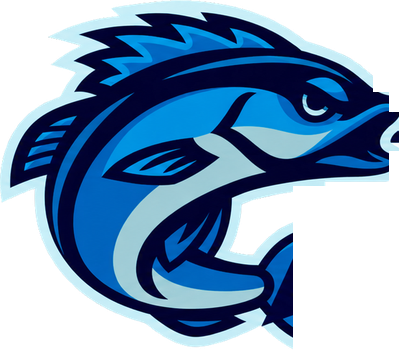
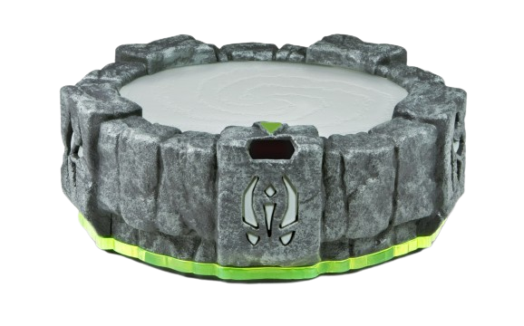

Hail to the Whale!
Once a deckhand of the Phantom Tide, forever chasing the Leviathan Cloud Crab. Water Giant, anchor in hand, patience of an angler.
Ship’s log
Portal
Screen time today: 0 minNow serving——
🍦 Ice cream machine: brokenWaiting for Cemu

On the portal
Trapped villains
Name each captured villain, browse with Alt+↑ / Alt+↓, then lock it in with Alt+Space. Element traps: Alt+Q Magic, W Water, E Tech, R Fire, Y Earth, U Life, I Air, O Undead, P Light, L Dark. Named traps are reserved for the carousel; shortcuts load another unassigned trap of that element.
Element shortcuts
Lit cards open this level’s elemental gates. Alt G loads the next one. Beta:
Alt + 1–9 / − · Add Shift for Player 2. Shortcuts work in Cemu.Click to load · Edit to assign
Vehicle shortcuts
Alt + Q W E · Sky, Land, Sea. Shift is optional; both players share the vehicle.Click to load · Edit to assign
Swap Force perk shortcuts
Alt + Q W E R Y U I O · Add Shift for Player 2.Loads a full pair, or changes the active Swap Force bottom.